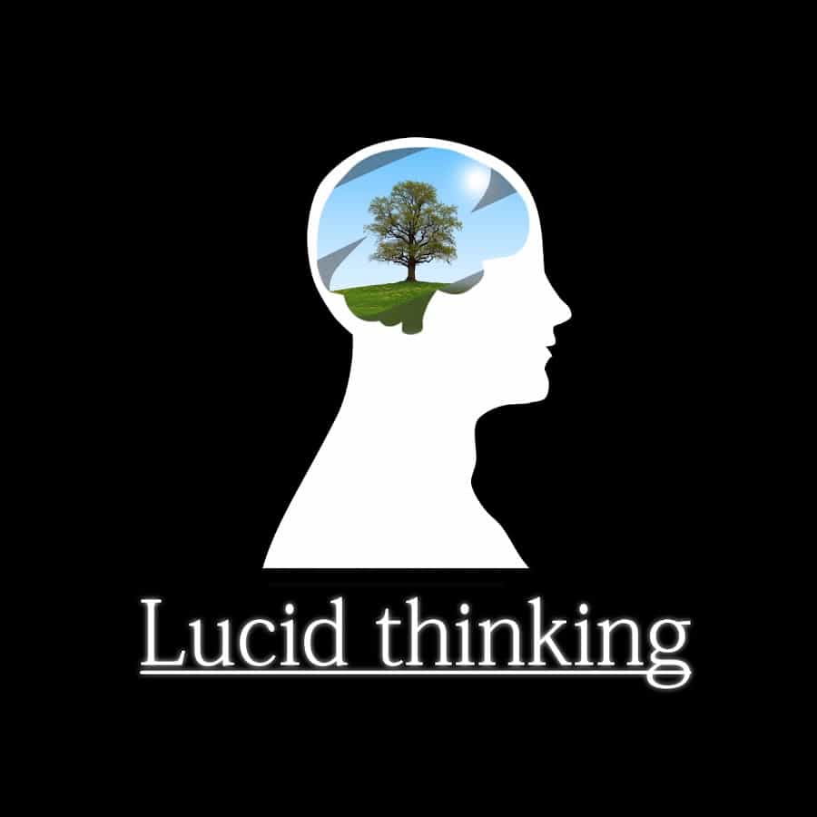

< < < Back
9 Ideas From Julius Evola’s “Ride The Tiger” That Are Still Valid Today – Return Of Kings
The Italian religious philosopher and cultural analyst Julius Evola (1898–1974) is one of the most engaging writers of the 20th century. Both his texts on various esoteric religious topics and the more politically oriented such are generally worth consideration.
My favorite is Ride the Tiger (1961, translated into English in 2003), which covers many of the existential, cultural and social implications of the modern world, characterized by gradual spiritual dissolution. Although Evola’s preferred audience – in line with his essentialist traditional philosophy – is a differentiated priest or warrior type, many intelligent non-conformist Westerners can find something insightful and valuable in this book.
I have discerned 9 aspects that are useful in order to understand oneself and the world and still are tenable.
1. Divine despotism is a fantasy
One of the main tenets of the Abrahamic religions, Judaism and Islam in particular, is divine despotism, the idea that an omnipotent god controls mankind and the events of our world.
Although this is not a scientific topic in that sense that it can be verified or falsified through such theories and methods, it nevertheless has implications for the way which we regard ourselves and the universe.
This belief leads to—and Evola emphasizes this tenet in his book—a renouncement of individual responsibility. It is actually anti-Christian in that sense that it neglects the ”free will”.
2. Atheism versus theism is a false dichotomy
Theism simply means the belief in the existence of deities, especially an omnipotent creator god, and its negation is atheism. In a way this is a question of either or: either a god or several gods exist, or the one or them do not.
But given the above premise, spirituality can go beyond these two types. Many traditions, esoteric ones in particular, are rather linked to the individual’s character, knowledge and predisposition, than the belief in a singular deity or several deities.
It is obvious that Evola thought less of monotheistic and polytheistic religiosity than aristocratic ”Tradition”, but it is important to be aware of that the entire span of traditional spirituality is much broader than atheism versus theism. One does only have to look at Theravada Buddhism, discussed by Evola in his work The Doctrine of Awakening, to make such a notion. As such this scheme is a false dichotomy.
3. Lucid inebriation goes beyond mere animal instincts
In a rather intricate discourse on the Apollonian and Dionysian myths – linked to the writings of a recurrent figure within this book, Friedrich Nietzsche – and how they correspond to modern civilization, Evola discusses a state of mind which goes beyond the mere ”Dionysian” instincts that have become predominant in our time (such as to eat, sleep, drink, fuck and listen to modern music).
He calls it a ”lucid inebriation”, a state of intellectual clarity which can emerge in certain situations, while pursuing particular activities:
Detachment coexists with a fully lived experience; a calm “being” is constantly wedded to the substance of life. The consequence of this union, existentially speaking, is a most particular kind of lucid inebriation, one might almost say intellectualized and magnetic, which is the absolute opposite of what comes from the ecstatic opening to the world of elementary forces, instinct, and “nature”.
Even though it is a bit unclear what this specifically means, a reader can imagine a state of mind which occurs when one is living completely in the moment and makes a significant realization of some sort. Such moments are more valuable than animalistic intoxication.

4. Act without desire from the premise of causal laws
In a consecutive chapter, Evola looks into how a differentiated person can partake in various activities without desire. This frame of mind is akin to both Buddhism and Stoicism (both discussed in the last chapter, linked to a discussion on suicide), and also Taoism.
Basically, while one engages in them, remain unattached, but be aware of the causal laws that underlie them. In this way he can live in the modern world and partake in whatever field, for instance game or work, he feels like. In other words, make a good job but do not fool yourself into thinking that it represents a higher meaning or purpose.
5. The modern personality is different from the traditional
In the modern world, all individuals are equal in dignity and rights. Although this certainly is a sympathetic position (here I disagree with the vehemently anti-democratic Evola), people are still different in terms of personality and behavior. One does only have to look at IQ or the Big Five to realize this.
However, the traditional personality – as it is perceived by Evola – is very different from the modern, whether one takes into account biology or not. Many traditional ones were linked to a divine role (person means mask in Latin) in a metaphysical act, rather than any Renaissance genius or modern ”fascinating”, contingent personality.
In this regard one can agree with Evola or not, but this descriptive characterization is nevertheless quite enlightening. The American merchant culture – including most non-conformists as they appear – is linked to the ”personal trademark” rather than a supra-personal essence or function.
The traditional personality has become hidden under a new mask, that of self-indulgence and self-gratification.
6. Our world is characterized by dissolution
In Evola’s principle work, Revolt Against The Modern World (1934), he analyzes the dissolution of the traditional world. Although it is hard to take this work very seriously from a strict historical point of view, as it is linked to a very selective interpretation of the past rather than extensive historiography, it still points out some indeed real currents and patterns. Ride the Tiger builds on that.
Just look at how traditional cultures have dissolved, and how the modern world, via middle-class Christianity, nationalism and capitalism, emerged with all its nihilism, hedonism and relativism; processes which have been accelerated under the aegis of post-modernist subjectivism, “equality”, and an overtly sexualized consumerist society.
One always wonders if things can become even worse and when it is going to stop.

7. Modern politics does not reflect any higher ideals
Evola was particularly anti-American and regarded it as only better than the Soviet Union in terms of degree (a war between vaishyas versus sudras with Dharma terminology).
Realpolitik should partly or largely be hinged upon a rational and pragmatic approach, but it becomes empty if it is not linked to any higher ethics or values.
Besides perhaps philanthropy and prosperity, it is hard to see that American politics – or any politics in the modern world for that matter – represent any ideals whatsoever. Therefore Evola emphasized apoliteia, which implicates that one should stay out of politics (or be involved but remain unattached). He asserted:
The present world of party politics consists only of the regime of the petty politicians, who, whatever their party affiliations, are often figureheads at the service of financial, industrial, or corporate interests. The situation has gone so far that even if parties or movements of a different type existed, they would have almost no following among the rootless masses who respond only to those who promise material advantages and “social conquests”.
Evola also quotes José Ortega y Gasset in this regard.
In America, only the freedom from and freedom to (to some extent), as they are integral parts of some dimensions of the American constitution, appear relevant since they enable men to choose to live their own lives according to their “personal equations”.
8. Sexual intoxication is an integral part of the American society
Various modern currents, such as existentialism philosophy and popular art and music, are scrutinized in Ride the Tiger. Several chapters, two in particular, deal with the sex roles and sex as such. Even though Evola, of course, does not look into late-modern tendencies such as homosexuality and gender-fluidity which had not yet emerged, he was still very foreseeable in this respect. For instance he wrote:
I must emphasize above all the direction of the processes at work toward a freeing of sex, but in no way a freeing from sex. Sex and women are instead becoming dominant forces in present society, an evident fact that is also part of the general phenomenology of every terminal phase of a civilization’s cycle. One might speak of a chronic sexual intoxication that is profusely manifested in public life, conduct, and art.
Sexual intoxication has become an integral part of the American society, basically post-World War II onwards, processes which likewise have accelerated. Capitalism in tandem with Cultural Marxism defeated the Christian moralistic bourgeois.

9. A ”greater morality” transcends the sign of times
When one lives in the current world, and is involved in various trivial activities, it is easy to feel “inauthentic” and hard to hold on to ideals, virtues and principles. But according to Evola, there are such which transcend the contingency of history and represent a “higher morality” which goes beyond petty moralism:
I have already indicated the principles of a “greater morality” that, being dependent on a kind of interior race, cannot be damaged by nihilistic dissolutions: these include truth, justice, loyalty, inner courage, the authentic, socially unconditioned sentiment of honor and shame, control over oneself. These are what are meant by “virtue”; sexual acts have no part in it except indirectly, and only when they lead to a behavior that deviates from these values.
In summary
Overall Ride the Tiger is a book worth to read in its entirety. Many facets of a higher individualism and the current culture which are discussed are still relevant. Julius Evola was indeed an anti-modernist with an anti-democratic inclination, but nevertheless he used logic to analyze the state of affairs in our world, in many ways different from the traditional.
Read More: 5 Ground-Breaking Books Written Between 1918 And 1945